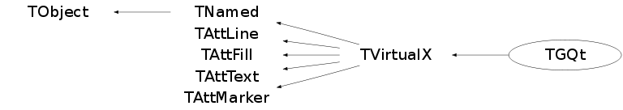

Function Members (Methods)
public:
| TGQt() | |
| TGQt(const TGQt& vx) | |
| TGQt(const char* name, const char* title) | |
| virtual | ~TGQt() |
| void | TObject::AbstractMethod(const char* method) const |
| virtual Int_t | TVirtualX::AddPixmap(ULong_t pixid, UInt_t w, UInt_t h) |
| virtual Int_t | AddWindow(ULong_t qwid, UInt_t w, UInt_t h) |
| virtual Bool_t | AllocColor(Colormap_t cmap, ColorStruct_t& color) |
| virtual void | TObject::AppendPad(Option_t* option = "") |
| virtual void | Bell(Int_t percent) |
| virtual void | TObject::Browse(TBrowser* b) |
| virtual void | ChangeActivePointerGrab(Window_t, UInt_t, Cursor_t) |
| virtual void | ChangeGC(GContext_t gc, GCValues_t* gval) |
| virtual void | ChangeProperties(Window_t id, Atom_t property, Atom_t type, Int_t format, UChar_t* data, Int_t len) |
| virtual void | ChangeProperty(Window_t id, Atom_t property, Atom_t type, UChar_t* data, Int_t len) |
| virtual void | ChangeWindowAttributes(Window_t id, SetWindowAttributes_t* attr) |
| virtual Bool_t | CheckEvent(Window_t id, EGEventType type, Event_t& ev) |
| static TClass* | Class() |
| virtual const char* | TObject::ClassName() const |
| virtual void | TNamed::Clear(Option_t* option = "") |
| virtual void | ClearArea(Window_t id, Int_t x, Int_t y, UInt_t w, UInt_t h) |
| virtual void | ClearWindow() |
| virtual void | ClearWindow(Window_t id) |
| virtual TObject* | TNamed::Clone(const char* newname = "") const |
| virtual void | CloseDisplay() |
| virtual void | ClosePixmap() |
| virtual void | CloseWindow() |
| static int | CoinFlag() |
| virtual const QColor& | ColorIndex(Color_t indx) const |
| virtual Int_t | TNamed::Compare(const TObject* obj) const |
| virtual void | ConvertPrimarySelection(Window_t id, Atom_t clipboard, Time_t when) |
| virtual void | ConvertSelection(Window_t, Atom_t&, Atom_t&, Atom_t&, Time_t&) |
| virtual void | TNamed::Copy(TObject& named) const |
| virtual void | CopyArea(Drawable_t src, Drawable_t dest, GContext_t gc, Int_t src_x, Int_t src_y, UInt_t width, UInt_t height, Int_t dest_x, Int_t dest_y) |
| virtual void | CopyGC(GContext_t org, GContext_t dest, Mask_t mask) |
| virtual void | CopyPixmap(Int_t wid, Int_t xpos, Int_t ypos) |
| virtual Pixmap_t | CreateBitmap(Drawable_t id, const char* bitmap, UInt_t width, UInt_t height) |
| virtual Cursor_t | CreateCursor(ECursor cursor) |
| virtual GContext_t | CreateGC(Drawable_t id, GCValues_t* gval) |
| virtual Drawable_t | CreateImage(UInt_t width, UInt_t height) |
| virtual void | CreateOpenGLContext(Int_t wid = 0) |
| virtual Bool_t | CreatePictureFromData(Drawable_t id, char** data, Pixmap_t& pict, Pixmap_t& pict_mask, PictureAttributes_t& attr) |
| virtual Bool_t | CreatePictureFromFile(Drawable_t id, const char* filename, Pixmap_t& pict, Pixmap_t& pict_mask, PictureAttributes_t& attr) |
| virtual Pixmap_t | CreatePixmap(Drawable_t id, UInt_t w, UInt_t h) |
| virtual Pixmap_t | CreatePixmap(Drawable_t id, const char* bitmap, UInt_t width, UInt_t height, ULong_t forecolor, ULong_t backcolor, Int_t depth) |
| virtual Pixmap_t | CreatePixmapFromData(unsigned char* bits, UInt_t width, UInt_t height) |
| static TQtApplication* | CreateQtApplicationImp() |
| virtual Region_t | CreateRegion() |
| virtual Window_t | CreateWindow(Window_t parent, Int_t x, Int_t y, UInt_t w, UInt_t h, UInt_t border, Int_t depth, UInt_t clss, void* visual, SetWindowAttributes_t* attr, UInt_t wtype) |
| virtual void | TObject::Delete(Option_t* option = "")MENU |
| virtual void | DeleteFont(FontStruct_t fs) |
| virtual void | DeleteGC(GContext_t gc) |
| virtual void | DeleteImage(Drawable_t img) |
| virtual void | DeleteOpenGLContext(Int_t wid = 0) |
| virtual void | DeletePictureData(void* data) |
| virtual void | DeletePixmap(Pixmap_t pmap) |
| virtual void | DeleteProperty(Window_t, Atom_t&) |
| virtual void | DestroyRegion(Region_t reg) |
| virtual void | TVirtualX::DestroySubwindows(Window_t id) |
| virtual void | DestroyWindow(Window_t id) |
| virtual const char* | DisplayName(const char* = 0) |
| Int_t | TAttLine::DistancetoLine(Int_t px, Int_t py, Double_t xp1, Double_t yp1, Double_t xp2, Double_t yp2) |
| virtual Int_t | TObject::DistancetoPrimitive(Int_t px, Int_t py) |
| virtual void | TObject::Draw(Option_t* option = "") |
| virtual void | DrawBox(Int_t x1, Int_t y1, Int_t x2, Int_t y2, TVirtualX::EBoxMode mode) |
| virtual void | DrawCellArray(Int_t x1, Int_t y1, Int_t x2, Int_t y2, Int_t nx, Int_t ny, Int_t* ic) |
| virtual void | TObject::DrawClass() constMENU |
| virtual TObject* | TObject::DrawClone(Option_t* option = "") constMENU |
| virtual void | DrawFillArea(Int_t n, TPoint* xy) |
| virtual void | DrawLine(Int_t x1, Int_t y1, Int_t x2, Int_t y2) |
| virtual void | DrawLine(Drawable_t id, GContext_t gc, Int_t x1, Int_t y1, Int_t x2, Int_t y2) |
| virtual void | DrawPolyLine(Int_t n, TPoint* xy) |
| virtual void | DrawPolyMarker(Int_t n, TPoint* xy) |
| virtual void | DrawRectangle(Drawable_t id, GContext_t gc, Int_t x, Int_t y, UInt_t w, UInt_t h) |
| virtual void | DrawSegments(Drawable_t id, GContext_t gc, Segment_t* seg, Int_t nseg) |
| virtual void | DrawString(Drawable_t id, GContext_t gc, Int_t x, Int_t y, const char* s, Int_t len) |
| virtual void | DrawText(Int_t x, Int_t y, Float_t angle, Float_t mgn, const char* text, TVirtualX::ETextMode mode) |
| virtual void | TObject::Dump() constMENU |
| virtual Bool_t | EmptyRegion(Region_t reg) |
| virtual Bool_t | EqualRegion(Region_t rega, Region_t regb) |
| virtual void | TObject::Error(const char* method, const char* msgfmt) const |
| virtual Int_t | EventsPending() |
| virtual UInt_t | ExecCommand(TGWin32Command* code) |
| virtual void | TObject::Execute(const char* method, const char* params, Int_t* error = 0) |
| virtual void | TObject::Execute(TMethod* method, TObjArray* params, Int_t* error = 0) |
| virtual void | TObject::ExecuteEvent(Int_t event, Int_t px, Int_t py) |
| virtual void | TObject::Fatal(const char* method, const char* msgfmt) const |
| virtual void | TNamed::FillBuffer(char*& buffer) |
| virtual void | FillPolygon(Window_t id, GContext_t gc, Point_t* points, Int_t npnt) |
| virtual void | FillRectangle(Drawable_t id, GContext_t gc, Int_t x, Int_t y, UInt_t w, UInt_t h) |
| virtual TObject* | TObject::FindObject(const char* name) const |
| virtual TObject* | TObject::FindObject(const TObject* obj) const |
| virtual Window_t | FindRWindow(Window_t win, Window_t dragwin, Window_t input, int x, int y, int maxd) |
| virtual void | FreeColor(Colormap_t cmap, ULong_t pixel) |
| virtual void | FreeFontNames(char** fontlist) |
| virtual void | FreeFontStruct(FontStruct_t fs) |
| virtual Float_t | GetAlpha(Int_t cindex) |
| virtual void | GetCharacterUp(Float_t& chupx, Float_t& chupy) |
| virtual unsigned char* | GetColorBits(Drawable_t wid, Int_t x = 0, Int_t y = 0, UInt_t w = 0, UInt_t h = 0) |
| virtual Colormap_t | GetColormap() const |
| virtual Window_t | GetCurrentWindow() const |
| virtual Window_t | GetDefaultRootWindow() const |
| virtual Int_t | GetDepth() const |
| virtual Display_t | GetDisplay() const |
| virtual Int_t | GetDoubleBuffer(Int_t wid) |
| TVirtualX::EDrawMode | TVirtualX::GetDrawMode() |
| virtual Option_t* | TObject::GetDrawOption() const |
| static Long_t | TObject::GetDtorOnly() |
| virtual Color_t | TAttFill::GetFillColor() const |
| virtual Style_t | TAttFill::GetFillStyle() const |
| virtual Int_t | GetFontAscent() const |
| virtual Int_t | GetFontDescent() const |
| virtual FontH_t | GetFontHandle(FontStruct_t fs) |
| virtual void | GetFontProperties(FontStruct_t font, Int_t& max_ascent, Int_t& max_descent) |
| virtual FontStruct_t | GetFontStruct(FontH_t fh) |
| virtual void | GetGCValues(GContext_t gc, GCValues_t& gval) |
| virtual void | GetGeometry(Int_t wid, Int_t& x, Int_t& y, UInt_t& w, UInt_t& h) |
| virtual const char* | TObject::GetIconName() const |
| virtual void | GetImageSize(Drawable_t id, UInt_t& width, UInt_t& height) |
| virtual Window_t | GetInputFocus() |
| virtual Color_t | TAttLine::GetLineColor() const |
| virtual Style_t | TAttLine::GetLineStyle() const |
| virtual Width_t | TAttLine::GetLineWidth() const |
| virtual Color_t | TAttMarker::GetMarkerColor() const |
| virtual Size_t | TAttMarker::GetMarkerSize() const |
| virtual Style_t | TAttMarker::GetMarkerStyle() const |
| virtual const char* | TNamed::GetName() const |
| virtual Handle_t | GetNativeEvent() const |
| virtual char* | TObject::GetObjectInfo(Int_t px, Int_t py) const |
| static Bool_t | TObject::GetObjectStat() |
| virtual Option_t* | TObject::GetOption() const |
| virtual Window_t | GetParent(Window_t id) const |
| virtual void | GetPasteBuffer(Window_t id, Atom_t atom, TString& text, Int_t& nchar, Bool_t del) |
| virtual ULong_t | GetPixel(Color_t cindex) |
| virtual void | GetPlanes(Int_t& nplanes) |
| virtual Window_t | GetPrimarySelectionOwner() |
| virtual Int_t | GetProperty(Window_t, Atom_t, Long_t, Long_t, Bool_t, Atom_t, Atom_t*, Int_t*, ULong_t*, ULong_t*, unsigned char**) |
| virtual void | GetRegionBox(Region_t reg, Rectangle_t* rect) |
| virtual void | GetRGB(Int_t index, Float_t& r, Float_t& g, Float_t& b) |
| virtual void | GetRGBA(Int_t cindex, Float_t& r, Float_t& g, Float_t& b, Float_t& a) |
| virtual Int_t | GetScreen() const |
| virtual Short_t | TAttText::GetTextAlign() const |
| virtual Float_t | TAttText::GetTextAngle() const |
| virtual Color_t | TAttText::GetTextColor() const |
| virtual void | GetTextExtent(UInt_t& w, UInt_t& h, char* mess) |
| virtual Font_t | TAttText::GetTextFont() const |
| virtual Float_t | GetTextMagnitude() |
| virtual Float_t | TAttText::GetTextSize() const |
| virtual const char* | TNamed::GetTitle() const |
| virtual UInt_t | TObject::GetUniqueID() const |
| virtual Visual_t | GetVisual() const |
| virtual void | GetWindowAttributes(Window_t id, WindowAttributes_t& attr) |
| virtual Window_t | GetWindowID(Int_t wid) |
| virtual void | GetWindowSize(Drawable_t id, Int_t& x, Int_t& y, UInt_t& w, UInt_t& h) |
| virtual void | GrabButton(Window_t id, EMouseButton button, UInt_t modifier, UInt_t evmask, Window_t confine, Cursor_t cursor, Bool_t grab = kTRUE) |
| virtual void | GrabKey(Window_t id, Int_t keycode, UInt_t modifier, Bool_t grab = kTRUE) |
| virtual void | GrabPointer(Window_t id, UInt_t evmask, Window_t confine, Cursor_t cursor, Bool_t grab = kTRUE, Bool_t owner_events = kTRUE) |
| virtual Bool_t | TObject::HandleTimer(TTimer* timer) |
| virtual ULong_t | TNamed::Hash() const |
| virtual Bool_t | HasTTFonts() const |
| virtual void | IconifyWindow(Window_t id) |
| virtual void | TObject::Info(const char* method, const char* msgfmt) const |
| virtual Bool_t | TObject::InheritsFrom(const char* classname) const |
| virtual Bool_t | TObject::InheritsFrom(const TClass* cl) const |
| virtual Bool_t | Init(void* display = 0) |
| virtual Int_t | InitWindow(ULong_t window) |
| virtual void | TObject::Inspect() constMENU |
| static TVirtualX*& | TVirtualX::Instance() |
| virtual Atom_t | InternAtom(const char* atom_name, Bool_t only_if_exist) |
| virtual void | IntersectRegion(Region_t rega, Region_t regb, Region_t result) |
| void | TObject::InvertBit(UInt_t f) |
| virtual TClass* | IsA() const |
| virtual Bool_t | TVirtualX::IsCmdThread() const |
| static Int_t | IsCoinLoaded() |
| virtual Bool_t | IsDNDAware(Window_t win, Atom_t* typelist) |
| virtual Bool_t | TObject::IsEqual(const TObject* obj) const |
| virtual Bool_t | TObject::IsFolder() const |
| virtual Bool_t | IsHandleValid(Window_t id) |
| Bool_t | TObject::IsOnHeap() const |
| virtual Bool_t | TNamed::IsSortable() const |
| virtual Bool_t | TAttFill::IsTransparent() const |
| Bool_t | TObject::IsZombie() const |
| static Int_t | iwid(QPaintDevice* wid) |
| static QPaintDevice* | iwid(Int_t wid) |
| static QPaintDevice* | iwid(Window_t wid) |
| virtual Int_t | KeysymToKeycode(UInt_t keysym) |
| virtual char** | ListFonts(const char* fontname, Int_t max, Int_t& count) |
| virtual Int_t | LoadQt(const char* shareLibFileName) |
| virtual FontStruct_t | LoadQueryFont(const char* font_name) |
| virtual void | LookupString(Event_t* event, char* buf, Int_t buflen, UInt_t& keysym) |
| virtual void | LowerWindow(Window_t id) |
| virtual void | TNamed::ls(Option_t* option = "") const |
| virtual void | MapRaised(Window_t id) |
| virtual void | MapSubwindows(Window_t id) |
| virtual void | MapWindow(Window_t id) |
| void | TObject::MayNotUse(const char* method) const |
| virtual void | TAttLine::Modify() |
| virtual void | MoveResizeWindow(Window_t id, Int_t x, Int_t y, UInt_t w, UInt_t h) |
| virtual void | MoveWindow(Int_t wid, Int_t x, Int_t y) |
| virtual void | MoveWindow(Window_t id, Int_t x, Int_t y) |
| virtual Bool_t | NeedRedraw(ULong_t tgwindow, Bool_t force) |
| virtual void | NextEvent(Event_t& event) |
| virtual Bool_t | TObject::Notify() |
| void | TObject::Obsolete(const char* method, const char* asOfVers, const char* removedFromVers) const |
| virtual Int_t | OpenDisplay(const char* dpyName) |
| virtual Int_t | OpenPixmap(UInt_t w, UInt_t h) |
| static void | TObject::operator delete(void* ptr) |
| static void | TObject::operator delete(void* ptr, void* vp) |
| static void | TObject::operator delete[](void* ptr) |
| static void | TObject::operator delete[](void* ptr, void* vp) |
| void* | TObject::operator new(size_t sz) |
| void* | TObject::operator new(size_t sz, void* vp) |
| void* | TObject::operator new[](size_t sz) |
| void* | TObject::operator new[](size_t sz, void* vp) |
| virtual void | TObject::Paint(Option_t* option = "") |
| virtual Bool_t | ParseColor(Colormap_t cmap, const char* cname, ColorStruct_t& color) |
| virtual Bool_t | PointInRegion(Int_t x, Int_t y, Region_t reg) |
| virtual Region_t | PolygonRegion(Point_t* points, Int_t np, Bool_t winding) |
| virtual void | TObject::Pop() |
| static void | PostQtEvent(QObject* receiver, QEvent* event) |
| virtual void | TNamed::Print(Option_t* option = "") const |
| virtual Int_t | processQtEvents(Int_t maxtime = 300) |
| virtual void | PutByte(Byte_t b) |
| virtual void | PutImage(Drawable_t id, GContext_t gc, Drawable_t img, Int_t dx, Int_t dy, Int_t x, Int_t y, UInt_t w, UInt_t h) |
| virtual void | PutPixel(Drawable_t id, Int_t x, Int_t y, ULong_t pixel) |
| virtual void | QueryColor(Colormap_t cmap, ColorStruct_t& color) |
| virtual void | QueryPointer(Int_t& ix, Int_t& iy) |
| virtual void | QueryPointer(Window_t id, Window_t& rootw, Window_t& childw, Int_t& root_x, Int_t& root_y, Int_t& win_x, Int_t& win_y, UInt_t& mask) |
| virtual void | RaiseWindow(Window_t id) |
| virtual Int_t | TObject::Read(const char* name) |
| virtual Pixmap_t | ReadGIF(Int_t x0, Int_t y0, const char* file, Window_t id = 0) |
| virtual Bool_t | ReadPictureDataFromFile(const char* filename, char*** ret_data) |
| virtual void | TObject::RecursiveRemove(TObject* obj) |
| virtual void | RemoveWindow(ULong_t qwid) |
| virtual void | ReparentWindow(Window_t id, Window_t pid, Int_t x, Int_t y) |
| virtual Int_t | RequestLocator(Int_t mode, Int_t ctyp, Int_t& x, Int_t& y) |
| virtual Int_t | RequestString(Int_t x, Int_t y, char* text) |
| virtual void | RescaleWindow(Int_t wid, UInt_t w, UInt_t h) |
| virtual void | TAttFill::ResetAttFill(Option_t* option = "") |
| virtual void | TAttLine::ResetAttLine(Option_t* option = "") |
| virtual void | TAttMarker::ResetAttMarker(Option_t* toption = "") |
| virtual void | TAttText::ResetAttText(Option_t* toption = "") |
| void | TObject::ResetBit(UInt_t f) |
| virtual Int_t | ResizePixmap(Int_t wid, UInt_t w, UInt_t h) |
| virtual void | ResizeWindow(Int_t wid) |
| virtual void | ResizeWindow(Window_t id, UInt_t w, UInt_t h) |
| virtual void | TObject::SaveAs(const char* filename = "", Option_t* option = "") constMENU |
| virtual void | TAttFill::SaveFillAttributes(ostream& out, const char* name, Int_t coldef = 1, Int_t stydef = 1001) |
| virtual void | TAttLine::SaveLineAttributes(ostream& out, const char* name, Int_t coldef = 1, Int_t stydef = 1, Int_t widdef = 1) |
| virtual void | TAttMarker::SaveMarkerAttributes(ostream& out, const char* name, Int_t coldef = 1, Int_t stydef = 1, Int_t sizdef = 1) |
| virtual void | TObject::SavePrimitive(ostream& out, Option_t* option = "") |
| virtual void | TAttText::SaveTextAttributes(ostream& out, const char* name, Int_t alidef = 12, Float_t angdef = 0, Int_t coldef = 1, Int_t fondef = 61, Float_t sizdef = 1) |
| virtual UInt_t | TVirtualX::ScreenWidthMM() const |
| virtual void | SelectInput(Window_t id, UInt_t evmask) |
| virtual void | SelectPixmap(Int_t qpixid) |
| virtual void | SelectWindow(Int_t wid) |
| virtual void | SendEvent(Window_t id, Event_t* ev) |
| virtual void | SetAlpha(Int_t cindex, Float_t a) |
| virtual void | SetBackground(GContext_t gc, ULong_t background) |
| void | TObject::SetBit(UInt_t f) |
| void | TObject::SetBit(UInt_t f, Bool_t set) |
| virtual void | SetCharacterUp(Float_t chupx, Float_t chupy) |
| virtual void | SetClassHints(Window_t id, char* className, char* resourceName) |
| virtual void | SetClipOFF(Int_t wid) |
| virtual void | SetClipRectangles(GContext_t gc, Int_t x, Int_t y, Rectangle_t* recs, Int_t n) |
| virtual void | SetClipRegion(Int_t wid, Int_t x, Int_t y, UInt_t w, UInt_t h) |
| static void | SetCoinFlag(int flag) |
| static void | SetCoinLoaded() |
| virtual void | SetCursor(Int_t win, ECursor cursor) |
| virtual void | SetCursor(Window_t id, Cursor_t curid) |
| virtual void | SetDashes(GContext_t gc, Int_t offset, const char* dash_list, Int_t n) |
| virtual void | SetDNDAware(Window_t, Atom_t*) |
| virtual void | SetDoubleBuffer(Int_t wid, Int_t mode) |
| virtual void | SetDoubleBufferOFF() |
| virtual void | SetDoubleBufferON() |
| virtual void | SetDrawMode(TVirtualX::EDrawMode mode) |
| virtual void | TObject::SetDrawOption(Option_t* option = "")MENU |
| static void | TObject::SetDtorOnly(void* obj) |
| virtual void | TAttFill::SetFillAttributes()MENU |
| virtual void | SetFillColor(Color_t cindex) |
| virtual void | SetFillStyle(Style_t style) |
| virtual void | SetForeground(GContext_t gc, ULong_t foreground) |
| virtual void | SetIconName(Window_t id, char* name) |
| virtual void | SetIconPixmap(Window_t id, Pixmap_t pix) |
| virtual void | SetInputFocus(Window_t id) |
| virtual void | SetKeyAutoRepeat(Bool_t on = kTRUE) |
| virtual void | TAttLine::SetLineAttributes()MENU |
| virtual void | SetLineColor(Color_t cindex) |
| virtual void | SetLineStyle(Style_t linestyle) |
| virtual void | SetLineType(Int_t n, Int_t* dash) |
| virtual void | SetLineWidth(Width_t width) |
| virtual void | TAttMarker::SetMarkerAttributes()MENU |
| virtual void | SetMarkerColor(Color_t cindex) |
| virtual void | SetMarkerSize(Float_t markersize) |
| virtual void | SetMarkerStyle(Style_t markerstyle) |
| virtual void | SetMWMHints(Window_t id, UInt_t value, UInt_t funcs, UInt_t input) |
| virtual void | TNamed::SetName(const char* name)MENU |
| virtual void | TNamed::SetNameTitle(const char* name, const char* title) |
| static void | TObject::SetObjectStat(Bool_t stat) |
| virtual void | SetOpacity(Int_t percent) |
| virtual void | SetPrimarySelectionOwner(Window_t id) |
| virtual void | SetRGB(Int_t cindex, Float_t r, Float_t g, Float_t b) |
| virtual void | SetRGB(Int_t cindex, Float_t r, Float_t g, Float_t b, Float_t a) |
| virtual Bool_t | SetSelectionOwner(Window_t, Atom_t&) |
| virtual void | SetTextAlign(Short_t talign = 11) |
| virtual void | TAttText::SetTextAngle(Float_t tangle = 0)MENU |
| virtual void | TAttText::SetTextAttributes()MENU |
| virtual void | SetTextColor(Color_t cindex) |
| virtual void | SetTextFont(Font_t fontnumber) |
| virtual Int_t | SetTextFont(char* fontname, TVirtualX::ETextSetMode mode) |
| virtual void | SetTextMagnitude(Float_t mgn) |
| virtual void | SetTextSize(Float_t textsize) |
| virtual void | TAttText::SetTextSizePixels(Int_t npixels) |
| virtual void | TNamed::SetTitle(const char* title = "")MENU |
| virtual void | SetTypeList(Window_t win, Atom_t prop, Atom_t* typelist) |
| virtual void | TObject::SetUniqueID(UInt_t uid) |
| virtual void | SetWindowBackground(Window_t id, ULong_t color) |
| virtual void | SetWindowBackgroundPixmap(Window_t id, Pixmap_t pxm) |
| virtual void | SetWindowName(Window_t id, char* name) |
| virtual void | SetWMPosition(Window_t id, Int_t x, Int_t y) |
| virtual void | SetWMSize(Window_t id, UInt_t w, UInt_t h) |
| virtual void | SetWMSizeHints(Window_t id, UInt_t wmin, UInt_t hmin, UInt_t wmax, UInt_t hmax, UInt_t winc, UInt_t hinc) |
| virtual void | SetWMState(Window_t id, EInitialState state) |
| virtual void | SetWMTransientHint(Window_t id, Window_t main_id) |
| virtual void | TVirtualX::ShapeCombineMask(Window_t id, Int_t x, Int_t y, Pixmap_t mask) |
| virtual void | ShowMembers(TMemberInspector& insp) |
| virtual Int_t | TNamed::Sizeof() const |
| virtual void | Streamer(TBuffer& b) |
| void | StreamerNVirtual(TBuffer& b) |
| virtual void | SubtractRegion(Region_t rega, Region_t regb, Region_t result) |
| virtual Int_t | SupportsExtension(const char* ext) const |
| virtual void | TVirtualX::Sync(Int_t mode) |
| virtual void | TObject::SysError(const char* method, const char* msgfmt) const |
| Bool_t | TObject::TestBit(UInt_t f) const |
| Int_t | TObject::TestBits(UInt_t f) const |
| virtual Int_t | TextWidth(FontStruct_t font, const char* s, Int_t len) |
| virtual void | TranslateCoordinates(Window_t src, Window_t dest, Int_t src_x, Int_t src_y, Int_t& dest_x, Int_t& dest_y, Window_t& child) |
| virtual void | UnionRectWithRegion(Rectangle_t* rect, Region_t src, Region_t dest) |
| virtual void | UnionRegion(Region_t rega, Region_t regb, Region_t result) |
| virtual void | UnmapWindow(Window_t id) |
| virtual void | Update(Int_t mode = 0) |
| virtual void | UpdateWindow(Int_t mode) |
| virtual void | TObject::UseCurrentStyle() |
| virtual void | TObject::Warning(const char* method, const char* msgfmt) const |
| virtual void | Warp(Int_t ix, Int_t iy) |
| virtual void | Warp(Int_t ix, Int_t iy, Window_t id) |
| virtual void | WMDeleteNotify(Window_t id) |
| virtual Int_t | TObject::Write(const char* name = 0, Int_t option = 0, Int_t bufsize = 0) |
| virtual Int_t | TObject::Write(const char* name = 0, Int_t option = 0, Int_t bufsize = 0) const |
| virtual Int_t | WriteGIF(char* name) |
| virtual void | WritePixmap(Int_t wid, UInt_t w, UInt_t h, char* pxname) |
| virtual void | XorRegion(Region_t rega, Region_t regb, Region_t result) |
protected:
| virtual void | TObject::DoError(int level, const char* location, const char* fmt, va_list va) const |
| void | TObject::MakeZombie() |
private:
| static Bool_t | IsRegistered(QPaintDevice* wid) |
| TGQt& | operator=(const TGQt&) |
| static Int_t | RegisterWid(QPaintDevice* wid) |
| static Int_t | UnRegisterWid(QPaintDevice* wid) |
Data Members
public:
| enum TVirtualX::EDrawMode { | kCopy | |
| kXor | ||
| kInvert | ||
| }; | ||
| enum TVirtualX::EBoxMode { | kHollow | |
| kFilled | ||
| }; | ||
| enum TVirtualX::ETextMode { | kClear | |
| kOpaque | ||
| }; | ||
| enum TVirtualX::ETextSetMode { | kCheck | |
| kLoad | ||
| }; | ||
| enum TObject::EStatusBits { | kCanDelete | |
| kMustCleanup | ||
| kObjInCanvas | ||
| kIsReferenced | ||
| kHasUUID | ||
| kCannotPick | ||
| kNoContextMenu | ||
| kInvalidObject | ||
| }; | ||
| enum TObject::[unnamed] { | kIsOnHeap | |
| kNotDeleted | ||
| kZombie | ||
| kBitMask | ||
| kSingleKey | ||
| kOverwrite | ||
| kWriteDelete | ||
| }; |
protected:
| TVirtualX::EDrawMode | TVirtualX::fDrawMode | Drawing mode |
| Color_t | TAttFill::fFillColor | fill area color |
| Style_t | TAttFill::fFillStyle | fill area style |
| Color_t | TAttLine::fLineColor | line color |
| Style_t | TAttLine::fLineStyle | line style |
| Width_t | TAttLine::fLineWidth | line width |
| Color_t | TAttMarker::fMarkerColor | Marker color index |
| Size_t | TAttMarker::fMarkerSize | Marker size |
| Style_t | TAttMarker::fMarkerStyle | Marker style |
| TString | TNamed::fName | object identifier |
| Short_t | TAttText::fTextAlign | Text alignment |
| Float_t | TAttText::fTextAngle | Text angle |
| Color_t | TAttText::fTextColor | Text color index |
| Font_t | TAttText::fTextFont | Text font number |
| Float_t | TAttText::fTextSize | Text size |
| TString | TNamed::fTitle | object title |
Class Charts
{kind=link}
{kind=link}
{kind=link}
{kind=link}

Function documentation
QPaintDevice * iwid(Int_t wid)
method to restore (cast) the QPaintDevice object pointer from ROOT windows "id"
void PostQtEvent(QObject* receiver, QEvent* event)
Qt announced that QThread::postEvent to become obsolete and we have to switch to the QAppication instead.
Int_t UnRegisterWid(QPaintDevice* wid)
unregister QWidget to the TCanvas return = Root registration Id or zero if the wd was not registered
Int_t InitWindow(ULong_t window)
- *-* if window == 0 InitWindow creates his own instance of TQtWindowsObject object - *-* Create a new windows - window is QWidget
void GetPlanes(Int_t& nplanes)
Get maximum number of planes*- *-* ============================ *-* nplanes : number of bit planes *
void CopyPixmap(Int_t wid, Int_t xpos, Int_t ypos)
Copy the pixmap wd at the position xpos, ypos in the current window.
void CreateOpenGLContext(Int_t wid = 0)
Create OpenGL context for win windows (for "selected" Window by default) printf(" TGQt::CreateOpenGLContext for wd = %x fSelected= %x, threadID= %d \n",wd,fSelectedWindow, GetCurrentThreadId());
void DeleteOpenGLContext(Int_t wid = 0)
Delete OpenGL context for win windows (for "selected" Window by default)
void DrawBox(Int_t x1, Int_t y1, Int_t x2, Int_t y2, TVirtualX::EBoxMode mode)
Draw a box. mode=0 hollow (kHollow) mode=1 solid (kSolid)
void DrawFillArea(Int_t n, TPoint* xy)
Fill area described by polygon. n : number of points xy(2,n) : list of points
void DrawLine(Int_t x1, Int_t y1, Int_t x2, Int_t y2)
Draw a line. x1,y1 : begin of line x2,y2 : end of line
void DrawPolyLine(Int_t n, TPoint* xy)
Draw a line through all points. n : number of points xy : list of points
void DrawPolyMarker(Int_t n, TPoint* xy)
Draw n markers with the current attributes at position x, y. n : number of markers to draw xy : x,y coordinates of markers
void DrawText(Int_t x, Int_t y, Float_t angle, Float_t mgn, const char* text, TVirtualX::ETextMode mode)
void GetGeometry(Int_t wid, Int_t& x, Int_t& y, UInt_t& w, UInt_t& h)
Returns the global cooordinate of the window "wd"
ULong_t GetPixel(Color_t cindex)
Return pixel value associated to specified ROOT color number. see: GQTGUI.cxx:QtColor() also
void GetTextExtent(UInt_t& w, UInt_t& h, char* mess)
Return the size of a character string. iw : text width ih : text height mess : message
Int_t GetFontAscent() const
Returns ascent of the current font (in pixels). The ascent of a font is the distance from the baseline to the highest position characters extend to
Int_t GetFontDescent() const
Returns the descent of the current font (in pixels. The descent is the distance from the base line to the lowest point characters extend to.
void MoveWindow(Int_t wid, Int_t x, Int_t y)
Move the window wd. wd : Window identifier. x : x new window position y : y new window position
void QueryPointer(Int_t& ix, Int_t& iy)
Query pointer position. ix : X coordinate of pointer iy : Y coordinate of pointer
Pixmap_t ReadGIF(Int_t x0, Int_t y0, const char* file, Window_t id = 0)
If id is NULL - loads the specified gif file at position [x0,y0] in the current window. Otherwise creates pixmap from gif file
Int_t RequestString(Int_t x, Int_t y, char* text)
Request string*-*-*-*-*-*-*- *-* ============== *-* x,y : position where text is displayed *-* text : text displayed (input), edited text (output) - *-* Request string: *-* text is displayed and can be edited with Emacs-like keybinding *-* return termination code (0 for ESC, 1 for RETURN) - *-* Return value: - *-* 0 - input was canceled *-* 1 - input was Ok - *
void RescaleWindow(Int_t wid, UInt_t w, UInt_t h)
Rescale the window wd. wd : Window identifier w : Width h : Heigth
Int_t ResizePixmap(Int_t wid, UInt_t w, UInt_t h)
Resize a pixmap. wd : pixmap to be resized w,h : Width and height of the pixmap
void ResizeWindow(Int_t wid)
Resize the current window if necessary. No implementation is required under Qt.
void SelectWindow(Int_t wid)
Select window to which subsequent output is directed.
fprintf(stderr," TGQt::SelectWindow %d \n", wd);
Don't select things twice
void SetClipOFF(Int_t wid)
Turn off the clipping for the window wd. deprecated fQPainter->setClipping(FALSE);
void SetClipRegion(Int_t wid, Int_t x, Int_t y, UInt_t w, UInt_t h)
Set clipping region for the window wd. wd : Window indentifier x,y : origin of clipping rectangle w,h : size of clipping rectangle;
void SetDoubleBuffer(Int_t wid, Int_t mode)
void SetFillStyle(Style_t style)
Set fill area style.
fstyle : compound fill area interior style
fstyle = 1000*interiorstyle + styleindex
void SetLineColor(Color_t cindex)
Set color index for lines*-*-*-*- *-* ========================= *-* cindex : color index *
void SetLineType(Int_t n, Int_t* dash)
Set line style-*-*-*-*-*-*-*-*- *-* ============== *-* Set line style: *-* if n < 0 use pre-defined Windows style: *-* 0 - solid lines *-* -1 - solid lines *-* -2 - dash line *-* -3 - dot line *-* -4 - dash-dot line *-* -5 - dash-dot-dot line *-* < -6 - solid line - *-* if n > 0 use dashed lines described by DASH(N) *-* e.g. n=4,DASH=(6,3,1,3) gives a dashed-dotted line with dash length 6 *-* and a gap of 7 between dashes -
void SetLineStyle(Style_t linestyle)
Set line style-*-*-*-*-*-*-*-*- *-* ============== *-* Use pre-defined Windows style: *-* linestyle = *-* 0 - solid lines *-* -1 - solid lines *-* -2 - dash line *-* -3 - dot line *-* -4 - dash-dot line *-* -5 - dash-dot-dot line *-* < -6 - solid line - * Copy/Paste from TGX11::SetLineStyle (it is called "subclassing") Set line style.
void SetLineWidth(Width_t width)
Set line width*-*-*-*-*-*-*-*- *-* ============== *-* width : line width in pixels *
void SetMarkerColor(Color_t cindex)
Set color index for markers*-*-*- *-* =========================== *-* cindex : color index defined my IXSETCOL *
void SetMarkerSize(Float_t markersize)
Set marker size index for markers*-*-*- *-* ================================= *-* msize : marker scale factor *
void SetRGB(Int_t cindex, Float_t r, Float_t g, Float_t b, Float_t a)
Set the color with the alpha component (supported wuth Qt 4 only)
void GetRGBA(Int_t cindex, Float_t& r, Float_t& g, Float_t& b, Float_t& a)
Return RGBA components for the color cindex
void SetTextAlign(Short_t talign = 11)
Set text alignment*-*-*-*-*-*-*- *-* ================== *-* txalh : horizontal text alignment *-* txalv : vertical text alignment *
void SetTextColor(Color_t cindex)
Set color index for text*-*-*-*- *-* ======================== *-* cindex : color index defined my IXSETCOL *
Int_t SetTextFont(char* fontname, TVirtualX::ETextSetMode mode)
Set text font to specified name. mode : loading flag mode=kCheck = 0 : search if the font exist (kCheck) mode= kLoad = 1 : search the font and load it if it exists (kLoad) font : font name Set text font to specified name. This function returns 0 if the specified font is found, 1 if not.
void SetTextFont(Font_t fontnumber)
-*Set current text font number *-* =========================== *-* List of the currently supported fonts (screen and PostScript) *-* ============================================================= *-* Font ID X11 Win32 TTF lfItalic lfWeight x 10 *-* 1 : times-medium-i-normal "Times New Roman" 1 5 *-* 2 : times-bold-r-normal "Times New Roman" 0 8 *-* 3 : times-bold-i-normal "Times New Roman" 1 8 *-* 4 : helvetica-medium-r-normal "Arial" 0 5 *-* 5 : helvetica-medium-o-normal "Arial" 1 5 *-* 6 : helvetica-bold-r-normal "Arial" 0 8 *-* 7 : helvetica-bold-o-normal "Arial" 1 8 *-* 8 : courier-medium-r-normal "Courier New" 0 5 *-* 9 : courier-medium-o-normal "Courier New" 1 5 *-* 10 : courier-bold-r-normal "Courier New" 0 8 *-* 11 : courier-bold-o-normal "Courier New" 1 8 *-* 12 : symbol-medium-r-normal "Symbol" 0 6 *-* 13 : times-medium-r-normal "Times New Roman" 0 5 *-* 14 : "Wingdings" 0 5
Int_t WriteGIF(char* name)
Writes the current active window into pixmap file. The format is defined by the file name extension like "png","jpg","bmp" . . . If no extension is provided the "png" format is used by default Returns 1 in case of success, 0 otherwise Note: this method may not produce the expected result been called ---- from the ROOT prompt by simple reason: The active window will be console window rather the last selected ROOT canvas.
void WritePixmap(Int_t wid, UInt_t w, UInt_t h, char* pxname)
Write the pixmap wd in the bitmap file pxname in JPEG. wd : Pixmap address w,h : Width and height of the pixmap. if w = h = -1 the size of the pimxap is equal the size the wd size pxname : pixmap file name The format is defined by the file name extension like "png","jpg","bmp" . . . If no or some unknown extension is provided then the "png" format is used by default -- Take in account the special ROOT filename syntax 26.12.2006 vf "gif+NN" - an animated GIF file is produced, where NN is delay in 10ms units
Int_t processQtEvents(Int_t maxtime = 300)
Force processing the Qt events only without entering the ROOT event loop
TGQt()